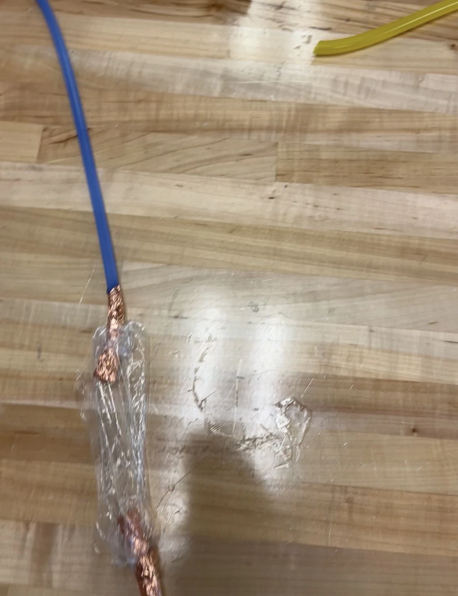

What happens when the drainage tube gets caught?
Our team worked on accidental pulling of a Foley catheter. We explored ways to let the external drainage system disconnect before a tug could pull on the catheter itself.
I contributed to ideation, CAD, fabrication, testing, calculations, documentation, and the presentation in a five-person team. The prototypes and test results on this page are shared team work.
Why we changed direction.
“In theory it worked perfectly (even with our calculations and analysis) but in practice it was impossible to improve using the tools that were available to us.”
My experience with the catheter tip concept
Our original direction was to modify the catheter tip to prevent lacerations. The calculations and analysis supported the idea, but we could not make it work in practice with the tools available. We pivoted to improving the drainage connection.
In verification testing, the protective sleeve could not be fully inserted into the model urethra. The additional diameter was a constraint the concept did not satisfy.
The final design kept the magnetic breakaway mechanism on the drainage tubing and omitted the tip sleeve.
A connector that releases—without releasing too easily.
We started with 25 concepts and used Benefit–Effort and Pugh matrices to narrow the options. The magnetic breakaway concept moved into hands-on testing.
The first prototype separated at 3.2 N, below our 13 N design target. But small movements could disconnect it, and the containment bag jammed during reconnection. A later prototype increased resistance to 6.9 N. The final design used interlocking printed housings to guide the connection and a bag that could be adjusted using rings.




Testing the pull from four directions.
The team tested the final connector at 0°, 30°, 60°, and 90°, with six trials per angle. All 24 measurements were below the project’s 13 N detachment target. The report records a minimum of 2.4 N at 0° and a maximum of 6.3 N at 90°.
These are classroom bench results from a model setup. The 13 N value is the project’s design criterion; the tests do not establish clinical safety or injury prevention.

Reconnection and repeated use.
The report supports an initial proof of concept. Further work would need to establish repeatability over many disconnect–reconnect cycles, resistance to leaks, and how the connector behaves under everyday movement. Those questions would come before any clinical claim.
Source: BMED 2310 final design report and design history file, Spring 2026. Team project with Aidan Barton, Ian Lopes, Elizabeth Stinespring, and Mariana Vale.